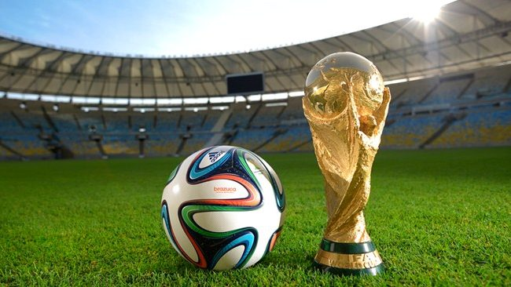
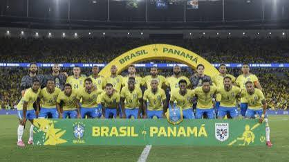
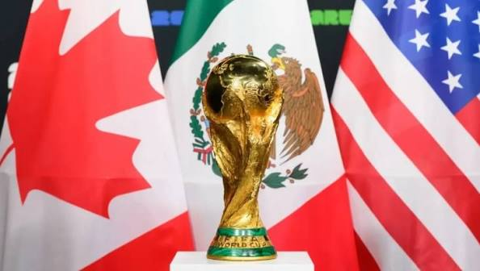
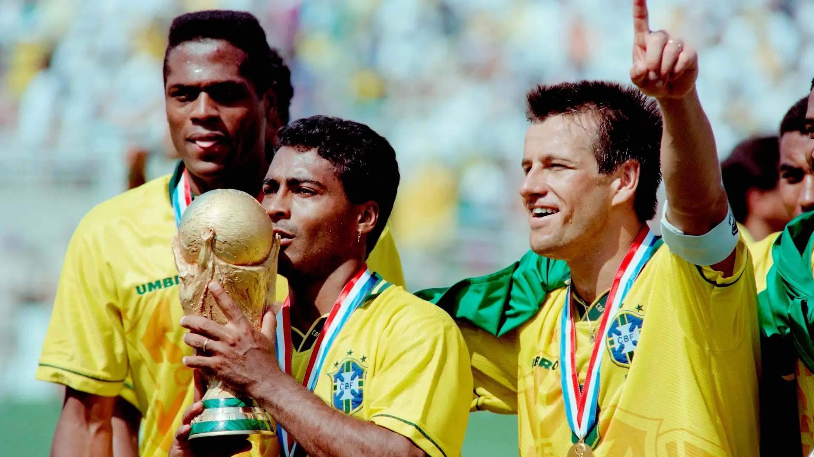
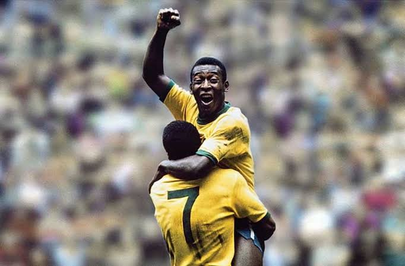
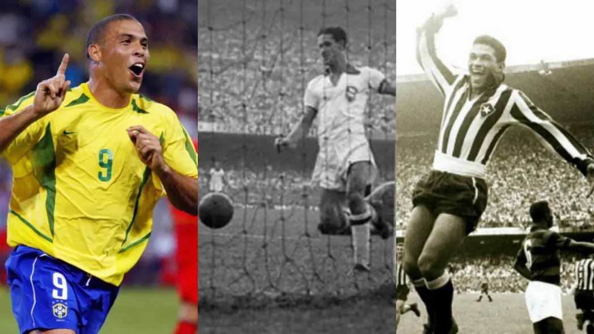

sobre a copa do mundo
a copa do mundo FIFA é torneio de futebol mais assistido do planeta. realizada a cada 4 anos, reúne as melhores seleções do mundo em uma competição que para países inteiros
desde a primeira edição em 1930, no uruguai, já foram 22 torneios disputados. em 2026, pela primeira vez na história, três países sediam juntos: estados unidos, méxico e canadá.
ver históriaa copa em números

22 edições
já foram realizadas 22 copas do mundo desde 1930, com pausa apenas durante a segunda guerra mundial.

5 títulos do brasil
o brasil é o maior campeão da história, com as conquistas em 1958, 1962, 1970, 1994 e 2002.

48 seleções em 2026
a copa 2026 estreia o novo formato com 48 seleções, diferentemente das 32 das edições anteriores.
navegue pelo site


